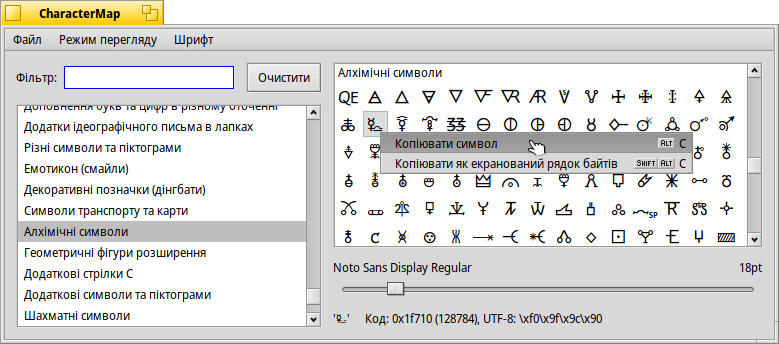

CharacterMap (Таблиця символів)
| Deskbar: | ||
| Розташування: | /boot/system/apps/CharacterMap | |
| Налаштування: | ~/config/settings/CharacterMap settings |
CharacterMap (Таблиця символів) показує повний набір символів кожного блоку Unicode.

Ліворуч, у списку представлені стандартизовані блоки Unicode разом із зручною функцією фільтра. За бажанням, Ви можете вибрати опцію в меню , які є областями, ще не розглянутими Консорціумом Unicode. Якщо Ви активуєте опцію , блоки, які не входять до набору поточного шрифту, стануть недоступні і будуть зафарбовані сірим кольором у списку блоків ліворуч а символи, які входять до цих блоків, не відображатимуться у таблиці символів праворуч.
У правій частині показано фактичні символи в цих блоках при використанні шрифту, вказаного в меню . Ви можете визначити, чи входить символ до набору цього шрифту (він відображається чорним кольором), або ж система надає запасний символ з якогось іншого шрифту (тоді він відображається сірим кольором), або ж у системі відсутній такий символ (тоді він відображається сірим прямокутником).
Нижче, під таблицею символів, знаходиться слайдер яким Ви можете змінити розмір шрифту. А ще нижче відображаються значення символу, який зараз знаходиться під вказівником миші, у шістнадцятковому, десятковому та UTF-8 форматі.
Методом «drag&drop» символ легко перемістити з таблиці у текстовий редактор або клікнути правою кнопкою миші і вибрати пункт меню (ALT C) чи (SHIFT ALT C). В результаті чого отримуємо 🜐 або \xf0\x9f\x9c\x90.
Якщо зробити клік на символі, Ви побачите його збільшене зображення. Ще один клік закриє збільшення.